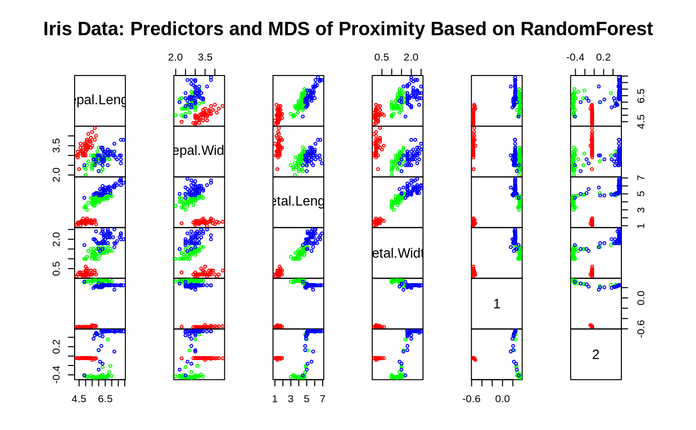
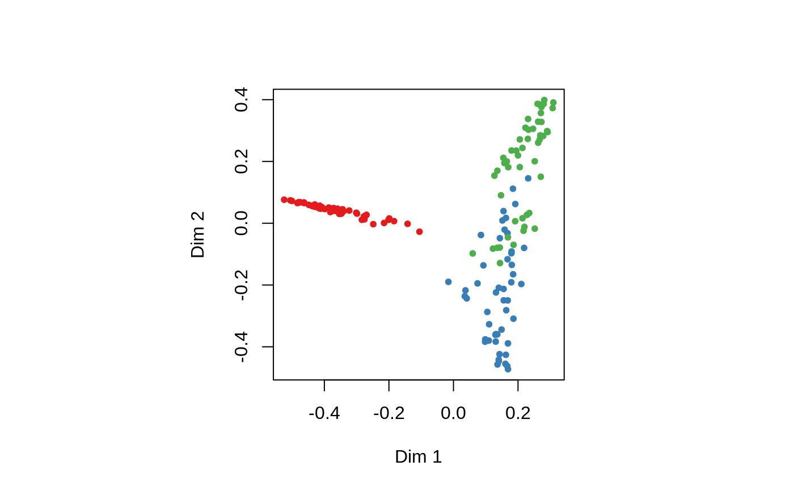

randomForest.RdrandomForest implements Breiman's random forest algorithm (based on
Breiman and Cutler's original Fortran code) for classification and
regression. It can also be used in unsupervised mode for assessing
proximities among data points.
# S3 method for formula randomForest(formula, data=NULL, ..., subset, na.action=na.fail) # S3 method for default randomForest(x, y=NULL, xtest=NULL, ytest=NULL, ntree=500, mtry=if (!is.null(y) && !is.factor(y)) max(floor(ncol(x)/3), 1) else floor(sqrt(ncol(x))), replace=TRUE, classwt=NULL, cutoff, strata, sampsize = if (replace) nrow(x) else ceiling(.632*nrow(x)), nodesize = if (!is.null(y) && !is.factor(y)) 5 else 1, maxnodes = NULL, importance=FALSE, localImp=FALSE, nPerm=1, proximity, oob.prox=proximity, norm.votes=TRUE, do.trace=FALSE, keep.forest=!is.null(y) && is.null(xtest), corr.bias=FALSE, keep.inbag=FALSE, ...) # S3 method for randomForest print(x, ...)
| data | an optional data frame containing the variables in the model.
By default the variables are taken from the environment which
|
|---|---|
| subset | an index vector indicating which rows should be used. (NOTE: If given, this argument must be named.) |
| na.action | A function to specify the action to be taken if NAs are found. (NOTE: If given, this argument must be named.) |
| x, formula | a data frame or a matrix of predictors, or a formula
describing the model to be fitted (for the
|
| y | A response vector. If a factor, classification is assumed,
otherwise regression is assumed. If omitted, |
| xtest | a data frame or matrix (like |
| ytest | response for the test set. |
| ntree | Number of trees to grow. This should not be set to too small a number, to ensure that every input row gets predicted at least a few times. |
| mtry | Number of variables randomly sampled as candidates at each
split. Note that the default values are different for
classification (sqrt(p) where p is number of variables in |
| replace | Should sampling of cases be done with or without replacement? |
| classwt | Priors of the classes. Need not add up to one. Ignored for regression. |
| cutoff | (Classification only) A vector of length equal to number of classes. The `winning' class for an observation is the one with the maximum ratio of proportion of votes to cutoff. Default is 1/k where k is the number of classes (i.e., majority vote wins). |
| strata | A (factor) variable that is used for stratified sampling. |
| sampsize | Size(s) of sample to draw. For classification, if sampsize is a vector of the length the number of strata, then sampling is stratified by strata, and the elements of sampsize indicate the numbers to be drawn from the strata. |
| nodesize | Minimum size of terminal nodes. Setting this number larger causes smaller trees to be grown (and thus take less time). Note that the default values are different for classification (1) and regression (5). |
| maxnodes | Maximum number of terminal nodes trees in the forest
can have. If not given, trees are grown to the maximum possible
(subject to limits by |
| importance | Should importance of predictors be assessed? |
| localImp | Should casewise importance measure be computed?
(Setting this to |
| nPerm | Number of times the OOB data are permuted per tree for assessing variable importance. Number larger than 1 gives slightly more stable estimate, but not very effective. Currently only implemented for regression. |
| proximity | Should proximity measure among the rows be calculated? |
| oob.prox | Should proximity be calculated only on ``out-of-bag'' data? |
| norm.votes | If |
| do.trace | If set to |
| keep.forest | If set to |
| corr.bias | perform bias correction for regression? Note: Experimental. Use at your own risk. |
| keep.inbag | Should an |
| ... | optional parameters to be passed to the low level function
|
An object of class randomForest, which is a list with the
following components:
the original call to randomForest
one of regression, classification, or
unsupervised.
the predicted values of the input data based on out-of-bag samples.
a matrix with nclass + 2 (for classification)
or two (for regression) columns. For classification, the first
nclass columns are the class-specific measures computed as
mean descrease in accuracy. The nclass + 1st column is the
mean descrease in accuracy over all classes. The last column is the
mean decrease in Gini index. For Regression, the first column is
the mean decrease in accuracy and the second the mean decrease in MSE.
If importance=FALSE, the last measure is still returned as a
vector.
The ``standard errors'' of the permutation-based
importance measure. For classification, a p by nclass
+ 1 matrix corresponding to the first nclass + 1 columns
of the importance matrix. For regression, a length p vector.
a p by n matrix containing the casewise importance
measures, the [i,j] element of which is the importance of i-th
variable on the j-th case. NULL if localImp=FALSE.
number of trees grown.
number of predictors sampled for spliting at each node.
(a list that contains the entire forest; NULL if
randomForest is run in unsupervised mode or if
keep.forest=FALSE.
(classification only) vector error rates of the prediction on the input data, the i-th element being the (OOB) error rate for all trees up to the i-th.
(classification only) the confusion matrix of the prediction (based on OOB data).
(classification only) a matrix with one row for each input data point and one column for each class, giving the fraction or number of (OOB) `votes' from the random forest.
number of times cases are `out-of-bag' (and thus used in computing OOB error estimate)
if proximity=TRUE when
randomForest is called, a matrix of proximity measures among
the input (based on the frequency that pairs of data points are in
the same terminal nodes).
(regression only) vector of mean square errors: sum of squared
residuals divided by n.
(regression only) ``pseudo R-squared'': 1 - mse /
Var(y).
if test set is given (through the xtest or additionally
ytest arguments), this component is a list which contains the
corresponding predicted, err.rate, confusion,
votes (for classification) or predicted, mse and
rsq (for regression) for the test set. If
proximity=TRUE, there is also a component, proximity,
which contains the proximity among the test set as well as proximity
between test and training data.
The forest structure is slightly different between
classification and regression. For details on how the trees are
stored, see the help page for getTree.
If xtest is given, prediction of the test set is done ``in
place'' as the trees are grown. If ytest is also given, and
do.trace is set to some positive integer, then for every
do.trace trees, the test set error is printed. Results for the
test set is returned in the test component of the resulting
randomForest object. For classification, the votes
component (for training or test set data) contain the votes the cases
received for the classes. If norm.votes=TRUE, the fraction is
given, which can be taken as predicted probabilities for the classes.
For large data sets, especially those with large number of variables,
calling randomForest via the formula interface is not advised:
There may be too much overhead in handling the formula.
The ``local'' (or casewise) variable importance is computed as follows: For classification, it is the increase in percent of times a case is OOB and misclassified when the variable is permuted. For regression, it is the average increase in squared OOB residuals when the variable is permuted.
Breiman, L. (2001), Random Forests, Machine Learning 45(1), 5-32.
Breiman, L (2002), ``Manual On Setting Up, Using, And Understanding Random Forests V3.1'', https://www.stat.berkeley.edu/~breiman/Using_random_forests_V3.1.pdf.
## Classification: ##data(iris) set.seed(71) iris.rf <- randomForest(Species ~ ., data=iris, importance=TRUE, proximity=TRUE) print(iris.rf)#> #> Call: #> randomForest(formula = Species ~ ., data = iris, importance = TRUE, proximity = TRUE) #> Type of random forest: classification #> Number of trees: 500 #> No. of variables tried at each split: 2 #> #> OOB estimate of error rate: 4.67% #> Confusion matrix: #> setosa versicolor virginica class.error #> setosa 50 0 0 0.00 #> versicolor 0 47 3 0.06 #> virginica 0 4 46 0.08#> setosa versicolor virginica MeanDecreaseAccuracy MeanDecreaseGini #> Sepal.Length 5.88 5.87 9.21 10.62 9.37 #> Sepal.Width 5.23 0.31 4.71 4.94 2.45 #> Petal.Length 21.60 31.41 27.71 32.39 42.13 #> Petal.Width 22.96 33.74 32.07 33.85 45.28## Do MDS on 1 - proximity: iris.mds <- cmdscale(1 - iris.rf$proximity, eig=TRUE) op <- par(pty="s") pairs(cbind(iris[,1:4], iris.mds$points), cex=0.6, gap=0, col=c("red", "green", "blue")[as.numeric(iris$Species)], main="Iris Data: Predictors and MDS of Proximity Based on RandomForest")#> [1] 0.7373483 0.7989356## The `unsupervised' case: set.seed(17) iris.urf <- randomForest(iris[, -5]) MDSplot(iris.urf, iris$Species)## stratified sampling: draw 20, 30, and 20 of the species to grow each tree. (iris.rf2 <- randomForest(iris[1:4], iris$Species, sampsize=c(20, 30, 20)))#> #> Call: #> randomForest(x = iris[1:4], y = iris$Species, sampsize = c(20, 30, 20)) #> Type of random forest: classification #> Number of trees: 500 #> No. of variables tried at each split: 2 #> #> OOB estimate of error rate: 4.67% #> Confusion matrix: #> setosa versicolor virginica class.error #> setosa 50 0 0 0.00 #> versicolor 0 47 3 0.06 #> virginica 0 4 46 0.08## Regression: ## data(airquality) set.seed(131) ozone.rf <- randomForest(Ozone ~ ., data=airquality, mtry=3, importance=TRUE, na.action=na.omit) print(ozone.rf)#> #> Call: #> randomForest(formula = Ozone ~ ., data = airquality, mtry = 3, importance = TRUE, na.action = na.omit) #> Type of random forest: regression #> Number of trees: 500 #> No. of variables tried at each split: 3 #> #> Mean of squared residuals: 302.2117 #> % Var explained: 72.46#> %IncMSE IncNodePurity #> Solar.R 9.76 10741.33 #> Wind 22.15 44234.96 #> Temp 43.85 53787.56 #> Month 2.59 1692.48 #> Day 0.93 6606.39## "x" can be a matrix instead of a data frame: set.seed(17) x <- matrix(runif(5e2), 100) y <- gl(2, 50) (myrf <- randomForest(x, y))#> #> Call: #> randomForest(x = x, y = y) #> Type of random forest: classification #> Number of trees: 500 #> No. of variables tried at each split: 2 #> #> OOB estimate of error rate: 52% #> Confusion matrix: #> 1 2 class.error #> 1 25 25 0.50 #> 2 27 23 0.54#> 1 2 3 4 5 6 7 8 9 10 11 12 13 14 15 16 17 18 19 20 #> 1 1 1 1 1 1 1 1 1 1 1 1 1 1 1 1 1 1 1 1 #> 21 22 23 24 25 26 27 28 29 30 31 32 33 34 35 36 37 38 39 40 #> 1 1 1 1 1 1 1 1 1 1 1 1 1 1 1 1 1 1 1 1 #> 41 42 43 44 45 46 47 48 49 50 51 52 53 54 55 56 57 58 59 60 #> 1 1 1 1 1 1 1 1 1 1 2 2 2 2 2 2 2 2 2 2 #> 61 62 63 64 65 66 67 68 69 70 71 72 73 74 75 76 77 78 79 80 #> 2 2 2 2 2 2 2 2 2 2 2 2 2 2 2 2 2 2 2 2 #> 81 82 83 84 85 86 87 88 89 90 91 92 93 94 95 96 97 98 99 100 #> 2 2 2 2 2 2 2 2 2 2 2 2 2 2 2 2 2 2 2 2 #> Levels: 1 2## "complicated" formula: (swiss.rf <- randomForest(sqrt(Fertility) ~ . - Catholic + I(Catholic < 50), data=swiss))#> #> Call: #> randomForest(formula = sqrt(Fertility) ~ . - Catholic + I(Catholic < 50), data = swiss) #> Type of random forest: regression #> Number of trees: 500 #> No. of variables tried at each split: 1 #> #> Mean of squared residuals: 0.3277816 #> % Var explained: 44.34#> Courtelary Delemont Franches-Mnt Moutier Neuveville Porrentruy #> 8.541742 8.992064 9.124838 8.760460 8.541086 8.949770 #> Broye Glane Gruyere Sarine Veveyse Aigle #> 8.933005 9.149158 8.908574 8.887482 9.117942 7.922911 #> Aubonne Avenches Cossonay Echallens Grandson Lausanne #> 8.333468 8.221398 8.031662 8.306702 8.439164 7.720665 #> La Vallee Lavaux Morges Moudon Nyone Orbe #> 7.571783 8.193442 7.984520 8.340828 7.854661 7.872754 #> Oron Payerne Paysd'enhaut Rolle Vevey Yverdon #> 8.497338 8.503535 8.411120 8.035106 7.839470 8.330708 #> Conthey Entremont Herens Martigwy Monthey St Maurice #> 8.834288 8.654145 8.757652 8.560958 8.882983 8.469376 #> Sierre Sion Boudry La Chauxdfnd Le Locle Neuchatel #> 8.928218 8.635219 8.258310 8.028697 8.177889 7.779149 #> Val de Ruz ValdeTravers V. De Geneve Rive Droite Rive Gauche #> 8.573018 8.155001 6.776675 7.527191 7.289894## Test use of 32-level factor as a predictor: set.seed(1) x <- data.frame(x1=gl(53, 10), x2=runif(530), y=rnorm(530)) (rf1 <- randomForest(x[-3], x[[3]], ntree=10))#> #> Call: #> randomForest(x = x[-3], y = x[[3]], ntree = 10) #> Type of random forest: regression #> Number of trees: 10 #> No. of variables tried at each split: 1 #> #> Mean of squared residuals: 1.599315 #> % Var explained: -44.33## Grow no more than 4 nodes per tree: (treesize(randomForest(Species ~ ., data=iris, maxnodes=4, ntree=30)))#> [1] 4 4 4 4 4 4 4 4 4 4 4 4 4 4 4 4 4 4 4 4 4 4 4 4 4 4 4 4 4 4## test proximity in regression iris.rrf <- randomForest(iris[-1], iris[[1]], ntree=101, proximity=TRUE, oob.prox=FALSE) str(iris.rrf$proximity)#> num [1:150, 1:150] 1 0.386 0.347 0.307 0.881 ... #> - attr(*, "dimnames")=List of 2 #> ..$ : chr [1:150] "1" "2" "3" "4" ... #> ..$ : chr [1:150] "1" "2" "3" "4" ...